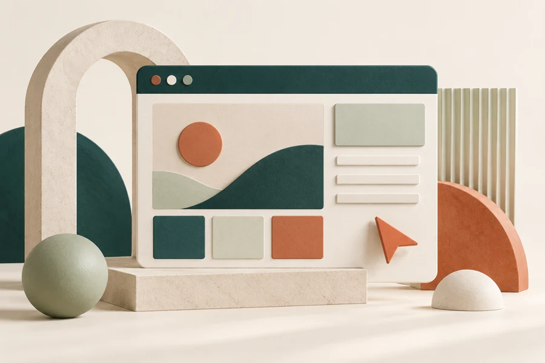

01 / AI Media · GEO / AEO
TECHi
AI-powered economy media . editorial SEO & answer engine optimization.
Visit websiteSEO STRATEGIST / DEVELOPER / GROWTH PARTNER
I’m Raheel. I turn search intent into clear strategy, thoughtful websites, and campaigns that give your business a stronger direction.
EXPERIENCE ACROSS BRANDS & INDUSTRIES
 Parcel Lodge
Parcel Lodge

01 SELECTED WORK
From editorial platforms to commerce and technology, every project begins with understanding the business.
View all 21 projects01 / AI Media · GEO / AEO
AI-powered economy media . editorial SEO & answer engine optimization.
Visit websiteParcel Lodge03 / Amazon FBA · USA
Amazon FBA services & advertising . SEO for catalog, PPC & brand growth.
Visit website02 THE GROWTH LAB
Choose a starting point. See how strategy, experience, and acquisition fit together.
START WITH DISCOVERY
Search growth starts with understanding intent. I connect crawlability, content depth, and entity clarity so your best pages have a stronger chance to be discovered.
START WITH EXPERIENCE
A website should make your offer easier to understand. I build WordPress experiences with a clear structure, practical editing, and a smooth path from interest to inquiry.
START WITH ACQUISITION
Campaigns work better when the ad and landing page tell the same story. I connect creative testing, audience research, and measurement so spending decisions have a clear basis.
03 / STRATEGY WITH A BUILDER’S MINDSET
Search, websites, and campaigns should speak the same language.
My computer science background helps me connect the technical layer with the customer experience. My work in editorial SEO adds a second lens: what makes information useful, trustworthy, and easy to discover.
I bring those perspectives together, with a clear roadmap and hands-on implementation.
Meet the person behind the work04 WAYS TO WORK TOGETHER

Technical SEO, useful content, and clear entity signals help people and search systems understand what makes your business relevant.
Explore the service
Fast pages, considered structure, and a clear conversion journey turn your website into a useful part of the business.
Explore the service
Connect the offer, creative, audience, and landing page. Test what earns attention and follow it through to the outcome.
Explore the service05 / A CLOSER LOOK AT IMPACT
Parcel Lodge’s client feedback reports a 250% increase in organic traffic over six months. The useful question is how the work connected search intent, site structure, and the business offer.
Read the results storiesreported organic traffic increase
Six-month campaign · UK courier comparison06 THE WORKING PROCESS
Understand your audience, your offer, and the point where the current journey breaks.
Separate urgent fixes from bigger opportunities. Build a roadmap with a reason behind every task.
Bring technical changes, content, design, and tracking together so the pieces support each other.
Review the right metrics, explain what changed, and use the evidence to choose the next move.
07 BEFORE WE BEGIN
Yes. We can focus on an SEO audit, a WordPress build, or a campaign review. The scope starts with the problem you want to solve.
Yes. I work remotely and have experience with international companies. We can agree on communication, deliverables, and review times before starting.
No. Search and advertising outcomes depend on competition, budget, the offer, and platform changes. I focus on clear priorities, careful execution, and transparent measurement.
Your website, your business goal, the challenge you are seeing, and your preferred timeline. If you already have analytics or an audit, mention that too.
GOOD WORK STARTS WITH A CONVERSATION
Bring the website, the challenge, and the ambition. I’ll bring a plan for what happens next.